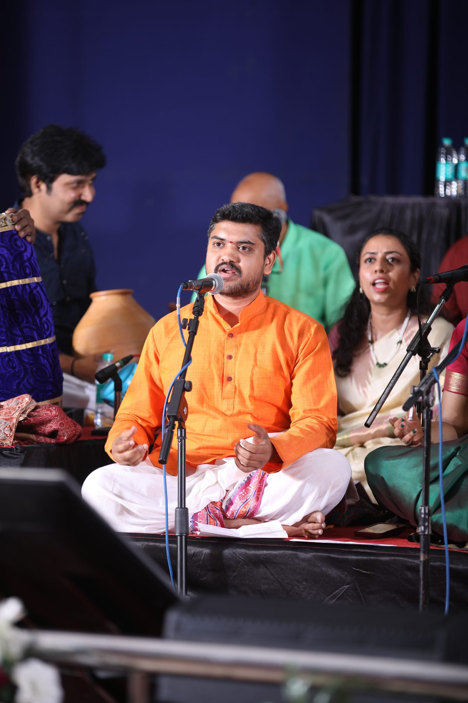
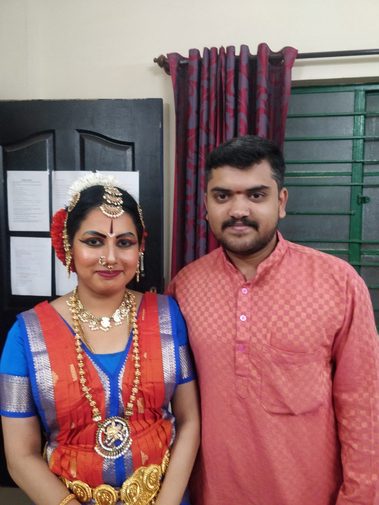
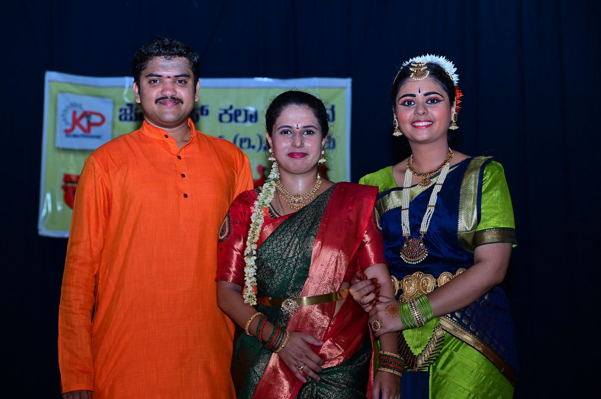

Nada Neerajanam
Featured as vocal accompaniment to his guru, Sangeetha Vidwan Dr. R.S. Nandakumar.
Classical kutcheris, radio and television, folk and devotional evenings, and lead roles in dance drama.



Featured as vocal accompaniment to his guru, Sangeetha Vidwan Dr. R.S. Nandakumar.
Lead role in the dance drama Narada Koravanji, telecast in Nada Neerajanam.
Lead role in a prestigious dance drama presented by Sadhana Sangama Trust.
Lead role in the dance drama for the Janmashtami celebrations.
His songs featured in this award winning programme, and at Desi Adda, Samskara Bharati and other venues.
Karnataka classical concert with his guru. Certificate of Excellence, 15 October 2015.
Invited by Kanchi Kamakoti Shankara University, Kanchipuram, to take part in its first Tyagaraja Aradhana celebrations.
Shruthi and vocal support for Dr. R.S. Nandakumar in his concerts.
He has performed concerts of devotional songs, patriotic songs and folk songs, alongside his classical training.
Concerts, bhajan evenings, festivals, lecture demonstrations and dance drama music.
Send an enquiry